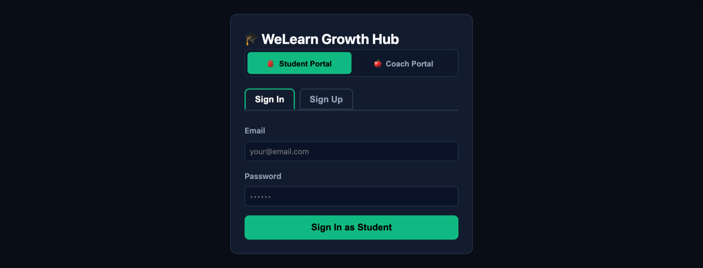
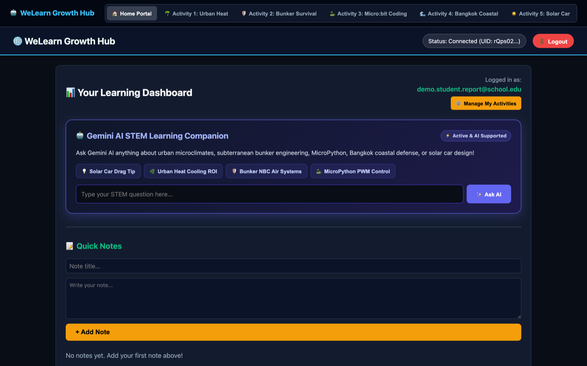
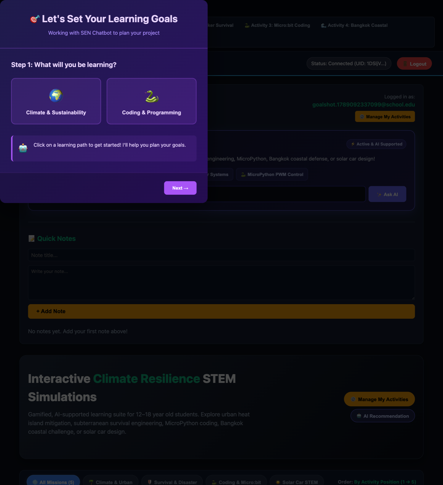
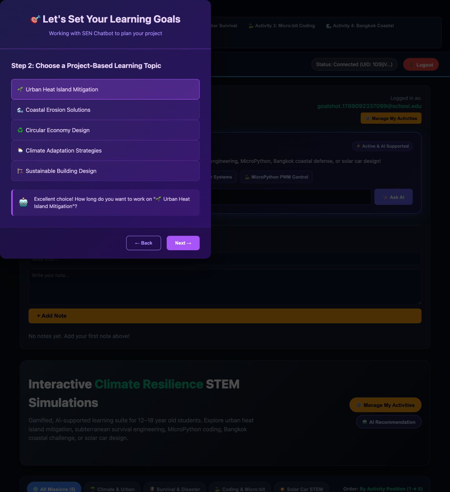
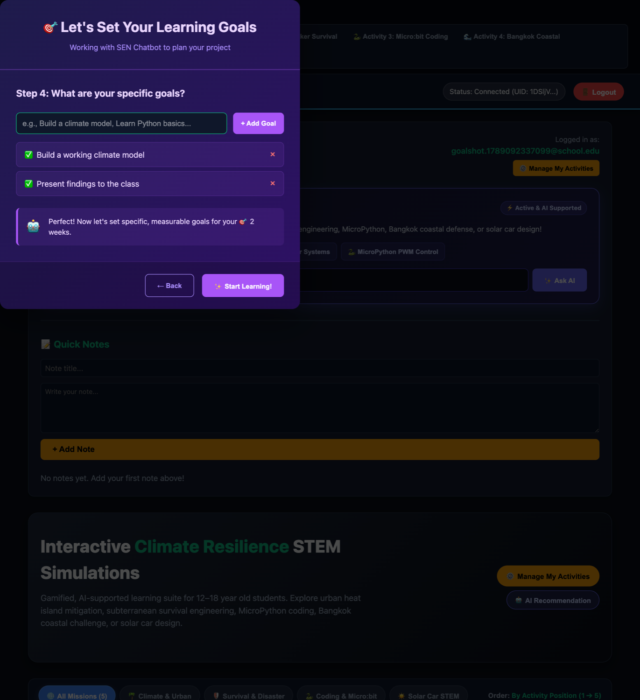
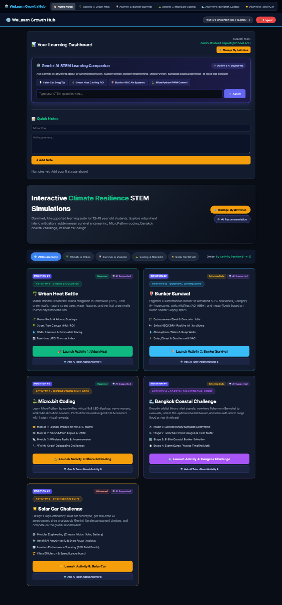
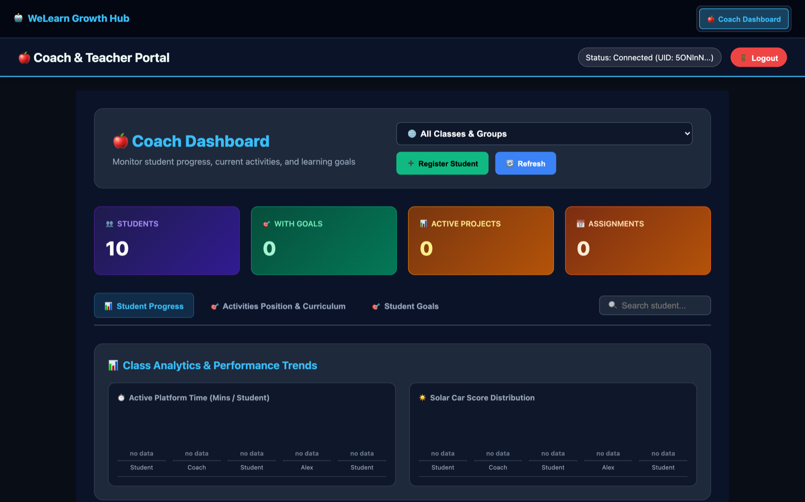

Platform walkthrough, feature reference, and the plan to enterprise release
WeLearn Growth Hub is a gamified STEM learning platform for students aged 12–18, paired with a monitoring portal for the coaches who teach them. Students set their own project goals with AI guidance, work through five interactive climate and engineering missions, and track progress daily. Coaches see the whole class in one view, rate work, leave feedback, set assignments, and export progress reports.
Both halves are live and functioning. A defect review during this period closed a privilege-escalation flaw, four features that reported success to the user while silently failing to save, and two charts that displayed invented figures where data was missing. Every fix was confirmed against the running system rather than inferred from a successful build.
One point of context matters for reading everything that follows: no real class has used the platform yet. Every account created to date is a test account, so the features described here are demonstrated rather than proven in a classroom. The remaining gap is therefore not capability but evidence and assurance. The plan in Section 7 puts a genuine pilot first, then widens reach — mobile devices, the Thai language — and finally puts testing and compliance controls around the platform before it holds real student records.
One web address serves both audiences. A single sign-in routes each person to the right experience based on the role held against their account.


A four-step guided flow: choose a learning path (climate or coding), pick a project topic from a curated list, set a project length, then write the specific goals to be achieved. An AI helper comments at each step, so a student who is unsure is not left staring at a blank field.
Reachable any time from the "Goal Setting" tab, not only at first sign-in.



Once set, goals become the student's home base: a progress percentage, a countdown of days remaining to the project deadline, and a tick-box checklist of each goal. Editing is one click away via "Set / Edit Goals".
Goals are stored centrally, so they follow the student to any device — and the same records are what the coach sees.
A standing prompt showing days remaining and the project deadline, with two actions: "Mark Today's Learning Done" to record the day, or "Snooze 24h" to defer it. The intent is a light daily habit rather than a notification that gets ignored.
An always-available assistant for questions about any mission — urban microclimates, bunker engineering, MicroPython, coastal defence, solar car design. Four one-tap prompts cover the most common questions; free text handles the rest.
Detects when a learner appears stuck and offers help unprompted, rather than requiring them to recognise they need it and ask. Built for students with additional learning needs, useful to everyone.
A private notebook attached to the account, plus "Manage My Activities" to choose which missions appear and an AI recommendation for what to attempt next.

| Mission | Level | What the student does |
|---|---|---|
| Urban Heat Battle | Beginner | Models heat-island mitigation for a tropical city — green roofs, street tree canopy, water features, permeable paving — against a live thermal comfort index and a fixed budget. |
| Bunker Survival | Intermediate | Engineers a subterranean shelter against 50°C heatwaves, Category 5+ storms, toxic wildfire smoke and flooding: structure, air filtration, water, power and supplies. |
| Micro:bit Coding | Beginner | Writes real MicroPython against a simulated micro:bit — LED matrix, servo motors and PWM, wireless radio and accelerometer — plus "fix my code" debugging challenges. |
| Bangkok Coastal Challenge | Intermediate | A four-stage crisis: decode a satellite binary alert, persuade a reluctant fisherman to evacuate, choose the best shelter site, then calculate storm-surge arrival times. |
| Solar Car Challenge | Advanced | Designs a solar vehicle from modular components, receives AI aerodynamic and drag analysis, iterates across versions, and competes on a class leaderboard. |
The sequence is deliberate — beginner modelling, then engineering, then coding, then applied crisis response, then open-ended design. Coaches can reorder it per class from the "Activities Position & Curriculum" view.

Four headline counts — students, students with goals set, active projects, and open assignments — filtered by class or group. "Register Student" enrols a learner directly; "Refresh" re-reads live data.
Student Progress — every student with their work and metrics. Activities Position & Curriculum — the order missions are presented in. Student Goals — goals across the class with status, for comment. A search box filters by student name.
Active platform time per student and solar car score distribution. Where a student has no recorded data the chart says so explicitly rather than substituting a placeholder figure — a coach must never mistake an invented number for a real one.
Each student shows their group, points, project telemetry (iteration, weight, motor) and total time spent, with a five-star control to rate the quality of their work. Ratings save to the student's record.
"View Details & Provide Feedback" opens full solar car telemetry and specifications, the student's goals, and a free-text box. Feedback appears directly on that student's dashboard.
Coaches set assignments with deadlines against a class, and export a fourteen-column progress report — activities started and completed, goals by status, time on task, active days, last-active date and engagement level — for reporting or parent communication.
| Capability | Status | Note |
|---|---|---|
| Sign-in and role routing | Working | Roles are server-controlled and cannot be self-assigned. |
| Goal-setting wizard | Working | Four steps; reachable at any time. |
| Goals, checklist and daily reminder | Working | Stored centrally and visible to the coach. |
| Five STEM missions | Working | All launch and run. |
| AI companion and accessibility support | Working | Available throughout. |
| Coach dashboard and class metrics | Working | Load time reduced from 6.1s to 3.3s. |
| Ratings, feedback and notifications | Working | Verified saving end to end. |
| Assignments with deadlines | Working | Coach-authored, student-readable, forgery-resistant. |
| Progress export | Working | Fourteen columns. |
| Recorded learning activity | None yet | All accounts to date are test accounts. No class has used the platform, so no genuine learning data exists and the analytics have nothing to describe. |
| Class analytics charts | Partial | Two of the four planned charts. |
| Thai language | Not built | A translation module exists but is not yet connected to any screen. |
| Mobile and tablet layouts | Not built | Breakpoints exist but are unverified on real devices. |
| Automated test coverage | Not built | The absence of tests is why the defects above went undetected. |
Estimated running cost for a single cohort of up to 30 students, based on the platform's observed behaviour. These are infrastructure and service costs only; they exclude people.
| Service | Monthly | Basis |
|---|---|---|
| Authentication | $0 | Free to 50,000 monthly active users. |
| Database | $0–3 | ~10,000 reads and 400 writes per day against a 50,000 read / 20,000 write daily allowance. |
| Hosting and SSL | $0–2 | ~31 MB per day against a 360 MB daily allowance. |
| AI (Gemini) | $2–15 | Roughly 4.7M input and 2.7M output tokens per month across all students. |
| Server-side AI proxy | $0–5 | Within the free invocation allowance at this volume. |
| Custom domain | ~$1.50 | Annual registration, amortised. |
| Total | $5–25 | Central estimate $10–15 per month, or $150–200 per year. |
Use the paid AI tier, not the free one. Free-tier terms have historically permitted prompts to be used for model improvement. With minors' schoolwork passing through the service that is the wrong trade at any price — and at these volumes the paid tier costs single digits per month, so there is no meaningful saving to defend.
Cost scales with class size, not linearly. The coach dashboard reads every student's records on each refresh. At 30 students this consumes about 1% of the free allowance. At 500 students across a full staff room it becomes both slow and billable. That is addressed in the Week 3 performance work and is a future concern, not a present one.
These figures are estimates derived from how the application behaves, not measurements of real classroom use. A month of pilot data would convert the range into a defensible number.
Sequenced so that real usage data exists before analytics are built on top of it, reach is widened before the platform goes in front of a whole school, and assurance is in place before it holds student records at scale.
| Week | Workstream | Outcome |
|---|---|---|
| Week 1 | Credential hygiene | Rotate the exposed AI key at the provider, purge it from repository history, and move AI calls behind a server-side proxy so no key ever reaches the browser. |
| Week 2 | Activity telemetry | Every mission records progress, scores and time on task as the student works. Without this the coach portal has little to report, which is its single largest limitation today. |
| Week 3 | Pilot with a real class | One class runs end to end for a week. Produces genuine data and surfaces the workflow problems that only appear in a classroom. |
| Week 4 | Coach portal depth | Individual student drill-down with intervention flagging, assignment submission and grading, and class-versus-class comparison. |
| Week 5 | Analytics | Completion trend over time and class-versus-cohort benchmarking added to the two existing charts. PDF and Excel export. |
| Week 6 | Mobile and tablet | Verified layouts at 320/768/1024/1440px on real devices, with touch targets and mobile navigation — the devices students actually use. |
| Week 7 | Accessibility | WCAG AA conformance: contrast, keyboard navigation, screen-reader labelling. Independently audited. |
| Week 8 | Thai language | Full interface in Thai with locale-aware dates and numbers, reviewed by a native speaker. |
| Week 9 | Testing and compliance | Automated tests above 80% coverage, covering every save path. Audit logging, data retention and access records for FERPA alignment. |
| Week 10 | Launch | Coach acceptance testing, load testing at full school scale, staging sign-off, training materials, production release. |
Approve Weeks 1 to 3 as a single block. They convert the platform from something that works into something with evidence behind it: credentials secured, real learning activity recorded, and one class having actually used it. That evidence should then inform whether the remaining seven weeks are worth the investment — a far better basis for that decision than this document alone.